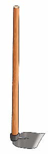
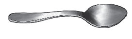
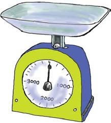

2. hoe spoon 3. rat cat Recognizing standard tools for measuring mass Beam balance  122 122 Exercise 6 continues. 2. A hoe and a spoon are shown. 3. A rat and a cat are shown. Recognizing standard tools for measuring mass. The pictures show a beam balance with a pan and a standard weight, and a dial weighing scale with a tray on top.